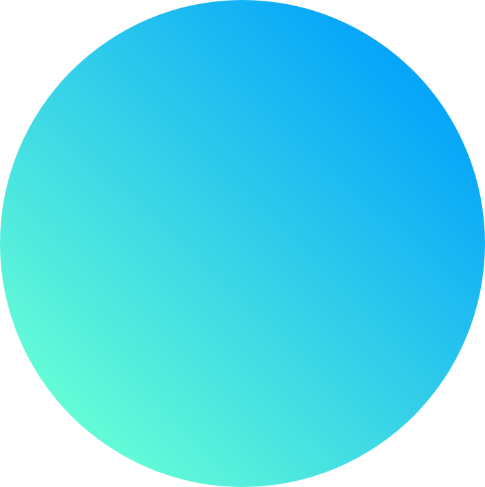

FEATURES
高速コーディング

コーディングに特化したフリーランスのため、
スピード感を持った開発が可能。
高品質

正しいマークアップで、
内部SEOに強いコーディングを
デフォルトで行います。
迅速なレスポンス

原則いただいたメッセージは、
業務時間内であれば6時間以内に
お返しいたします。
PRICE
| HTMLコーディングトップページ | 30.000円〜 |
|---|---|
| HTMLコーディング下層1ページ | 10.000円〜 |
| HTML+WordPressトップページ | 55.000円〜 |
| HTML+WordPress下層1ページ | 15.000円〜 |
＊詳細な価格はページや仕様によって異なります
FAQ
BLOG
サイトをリニューアルオープンしました。
2020.01.23
WebサイトでSEO内部施策に適したコーディングでどれぐらいサイトが早くなるのか検証してみました
2020.01.24
ユアコーディングではデザイナーの方を広く募集しています。
2020.01.25
WORKS
CONTACT
コーディングの人出が足りないとき、
あなたの力になります